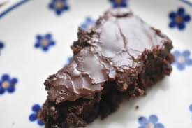

Opskriften
Kagen hedder Ammars velsmagende kage :)
For at lave Ammars velsmagende kage skal du have følgende ingredienser:
- 200 gram hvedemel
- 2 tsk bagepulver
Chokoladeglasur:
- 5 spsk kakao
- 2 tsk vaniljesukker
- 200 gram sukker
- 1 knivspids salt
- ½ dl olie solsikke- eller rapsolie
- 2½ dl kogende vand
- 200 gram flormelis
- 2 spsk kakao
- 2-3 spsk kogende vand
Følge Fremgangsmåden så kagen bliver lige så lærkket som på
billedet
Fremgangsmåden
- Bland alle de tørre ingredienser
- Rør olie og kogende vand i. Dejen kan røres bare med en dejspatel
- Smør et højt tærtefad og hæld dejen heri. Mit fad målte 27 cm i diameter og var 5 cm højt
- Bag kagen ca. 30-35 minutter v. 175 grader varmluft. Kagen er færdig, når den er gennembagt, men den må godt
være lidt klæg indeni
- Put først glasur på kagen, når den er helt afkølet
- Nyd gerne kagen med vanlijeis eller flødeskum til

Tilbage til forside